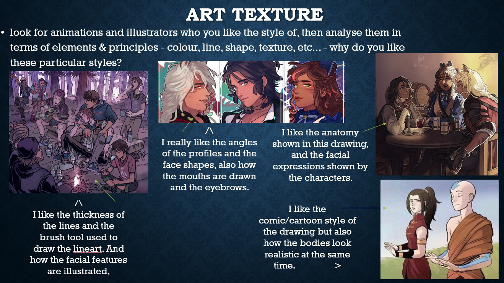

As part of my course, I was asked to generate an idea for a game and then creat a 2D animation game trailer using Adobe Animate. This task itself required me to spend a huge amount of time exploring the use of programs like PhotoShop and Illustrator, as well as Adobe Animate.
Synposis and Purpose Statement: Before beginning any practical work, I wrote a game synopsis and also a purpose statement of my game trailer. These help to understand the game itself and also to flesh out what I want the audience to gain from the trailer, which in turn helped me with some ideas. Here is my synposis and purpose statement:
My game trailer is going to follow the same plot and game idea from the previous SAC, which will be about a character called Artemis who lives in a world filled with dinosaurs and other creatures from the Jurassic, Cretaceous and Mesozoic eras. In my trailer I want to begin with a sort of story beginning with a young version of the main character who is living in peace perhaps on a beach enjoying the view, but then using sound effects built up suspense and use different camera cuts to cut between scenes where the young Artemis is scared and the sound of angry dinosaurs are heard. There will be some narrating at the beginning and then at the very end the narration will come back and say something more eerie and suspenseful.
Set in an alternate universe filled with ancient creatures of the Triassic, Jurassic and Cretaceous periods of the Mesozoic era, you play as a huntress named Artemis. The Earth is split into 3 large continents; Triassica, Jurassica and Cretaceia, each filled with the animals from each Mesozoic period. The player, or Artemis, begins their journey in the Triassic continent, Triassica, where their tribe has been wiped out by a strange and dangerous creature which had disappeared just as mysteriously as it had appeared. Artemis must complete quests and rebuild civilisation with an ambitious amount of side quests and main quests. Collect resources, craft tools, befriend tribes, tame creatures, build villages, discover landmarks, gather resources, escape angry tribes; Artemis’ adventures are endless.
The purpose of my game trailer will be to built suspense and have the audience interested in an interesting story and also action in the game. The trailer would be released on YouTube but could also be advertised on social media such as Instagram or Tumblr, basically places where people interested in games would be spending time on. Other advertisements for my game could also come in the form of posters. I want my audience to be drawn to the action that is hinted in the trailer and be intrigued by the main character.

Moodboards: To help me get a feel of how I wanted my animation to look, I created 3 small moodboards. These helped express my ideas for setting, colour palletes, art style, and overall vibe of my trailer.


Storyboards: These are essentially all sketched screenshots of your animation. Storyboards really help to flesh everything out. And I mean EVERYTHING. Without this storyboard, I wouldn't have been able to plan out how to get my story from part A to part B, as well as the fact that I wouldn't have been able to organise all the assets needed for the animation itself.
Speaking of assets, below are some of the assets I used for the animation, as well as backgrounds that I drew.


Audio: For my animation, I needed audio (no duh), so I made sure to find free sound effects and music that I could use, all copyright and royalty free. I even recorded my own voice and use the voice acting talents of my little brother to help with the dialogue. Here is a list of all the free audio I used.


Animating: Now came the real long part... Animating!! Once I had all my assets, audio, and backgrounds, I started animating my game trailer. It was a tedious process; there were many small details that were fundamental in making the animation feel the way I wanted it to. But, after many mistakes and many cases of trial and error, I was able to successfully animate over a minute of content for a game :)